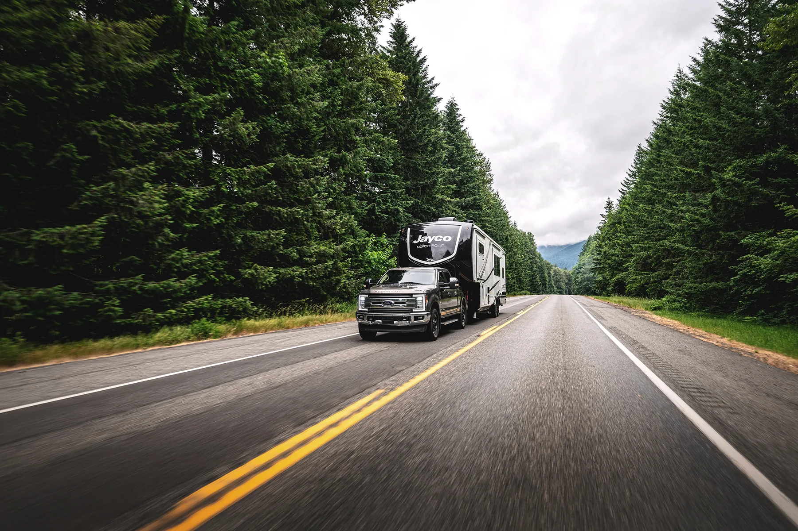
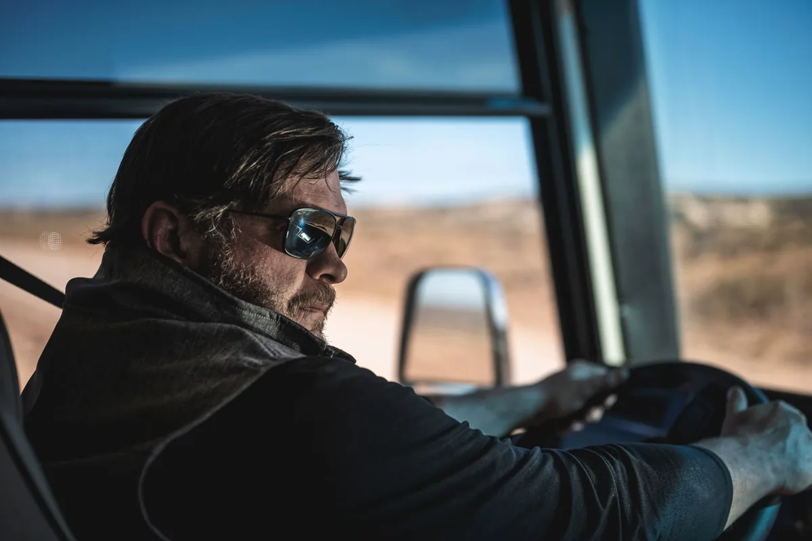
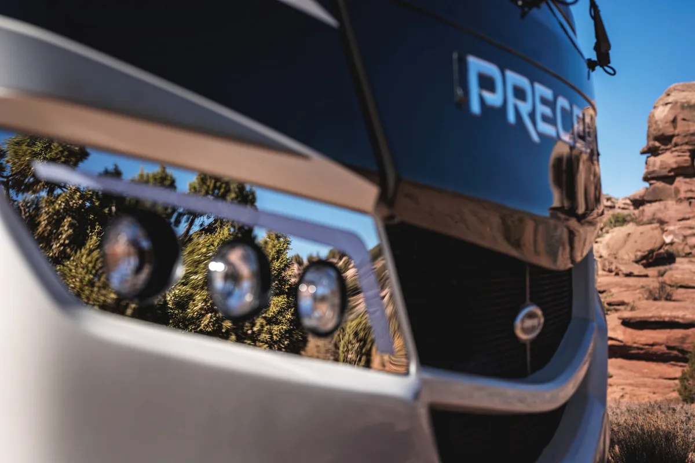
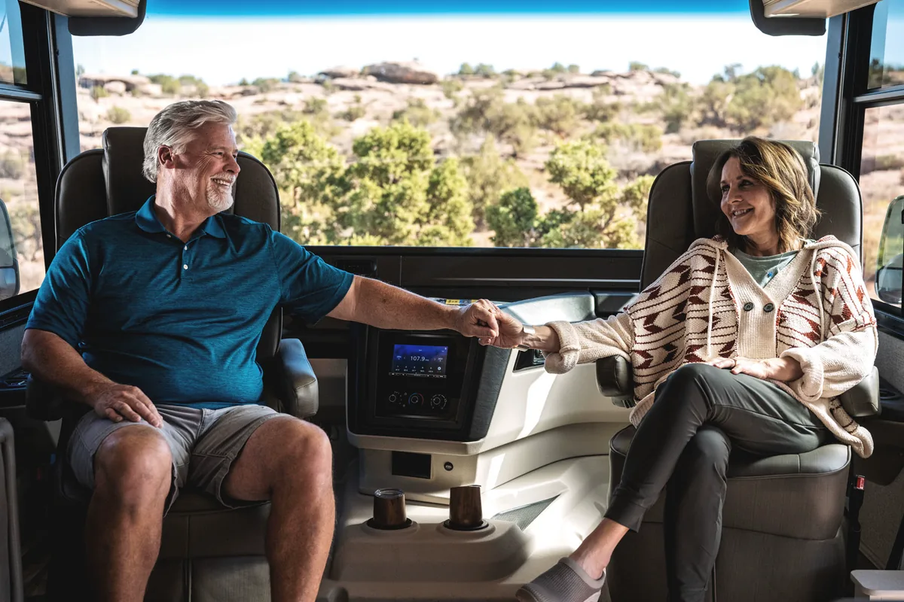

Everyone else on the road, too.
Most RV safety is about the people inside. A good deal of Jayco's is about making a very large object legible to the drivers around it.
An RV is longer than what people expect to be following, and it stops slower than it looks like it should. Most of what goes wrong is a misjudgement by somebody else — which is why the systems below fall into two groups: the ones that keep the coach doing what you asked it to, and the ones that tell everyone else what it is about to do.
Some of this is standard on everything. Some of it is on select models. Where Jayco says select, so does this page.
JaySMART™
Safety Markers And Reverse Travel. A patented set of exterior lamps that takes its cue from your tow vehicle's own signal — no adjustment, no special connector — and repeats it at the back, the sides and the front of the trailer. Press a signal to see what the driver behind you sees.
JaySMART™ is standard on select models. The diagram above is schematic — lamp positions vary by floorplan, and the behaviour is what is being shown, not the layout.

Stability, and being seen.
A trailer that tracks is a trailer you are not fighting, and a driver who is not fighting the coach has attention left over for the road. Most of Jayco's work here is suspension and geometry rather than electronics.
-
JRide®
The motorized ride and handling package: computer-balanced driveshafts, sway and stabiliser bars, and air suspension and braking systems — specified together rather than bolted on one part at a time.
-
4- and 5-Star Handling Packages
On towables: higher speed- and weight-rated tires, a rubberised suspension system, and a pin box with forward and backward travel that takes the shunt out of a fifth wheel before it reaches the truck.
-
The third brake light
A centre-mounted pulsing brake lamp on every motorhome, above the line of sight of the car behind — the same argument as JaySMART, made once more at the top of the coach.
-
The 120" windshield
The largest on the market, on Class A motorhomes. It is sold as a view and it works as visibility: more glass is more of the road, and the pillars are further out of the way.

You cannot mirror your way out of thirty feet.
Nearly every Jayco motorhome carries rear and side-view cameras feeding a display in the cab. Reversing into a site, changing lanes, judging a gate — the places a mirror stops being enough are the places the coach is longest.
The chassis under it comes with its own driver assistance, and Jayco builds on Ford®, Freightliner® and Mercedes® platforms — so what those manufacturers ship comes with them.

The parts you never see working.
Structure is the quietest safety feature there is: it does nothing at all until the day it does everything. These are the numbers behind it.
-
Magnum Truss™ Roof System
Standard on every fifth wheel and travel trailer, and tested to 4,500 pounds. That is a snow load and a person walking on it, not a rain shed — and it is the reason a Jayco roof is rated to be stood on.
-
Stronghold VBL™ Laminated Walls
Aluminium frame, fibreglass, metal backers and the interior panel, vacuum-bonded into a single wall. Strength without the weight that usually buys it, which matters twice on something you tow.
-
Robotically welded frames
Frames are welded by automated robotics rather than by hand. The argument is not that a robot welds better than a good welder — it is that it welds the same on the four hundredth frame as on the first.
-
One-piece seamless front caps
A single moulded cap on motorhomes, with no seam for water or road debris to work at over the years.
The four things
touching the road.
Tires are where RVs have historically been cheapest, and where the consequences are worst. Jayco's position is that they are not the place to save.
-
American-made tires
Nearly every Jayco towable and motorized RV leaves on American-made tires from Goodyear® and Michelin® — better road feel and better resistance to a flat, which on a trailer you may not immediately notice.
-
Named chassis partners
Motorized coaches are built on Ford®, Freightliner® and Mercedes® chassis. The braking, the stability control and the driver assistance underneath a Jayco are theirs, and they are serviceable at their networks as well as at a dealer.
-
Custom frames
On towables the steel frame is designed around the floorplan sitting on it, rather than a stock frame the floorplan is made to fit — which is a weight-distribution decision as much as a structural one.

A belt at every seat, not just the front two.
Jayco fits and tests seat belts at every designated seating position in the living area of its motorhomes, which it states as an exclusive in the category. In a vehicle where people genuinely do travel behind the cab, that is the difference between a seat and a seat you can legally use while moving.
Also on motorized: an impenetrable strip over the exhaust, held by a heat-activated bond and secured under the heat shield, to deter catalytic converter theft — the one item on this page that protects the coach rather than the people in it.
One thing this page does not tell you. Jayco names safety devices as a category its 100% pre-delivery inspection tests, and does not publish a specification for the fire, carbon monoxide and LP detection fitted to its coaches — no brands, no placement, no standard. That section is therefore missing rather than written: a detector claim invented to complete a layout is the worst kind of thing to get wrong. Ask a dealer what is fitted to the coach in front of you, or check the owner's manual for that model and year, which does list it. Everything else on this page is Jayco's own, from jayco.com/about/safety and its own journal, harvested 7 September 2026.
About RV safety.
No. It reads the standard trailer connector and takes its cue from your tow vehicle's own signal, with no adjustment and no special connection. It is standard on select models — the floorplan catalog and a dealer will tell you whether a particular coach has it.
The Magnum Truss™ roof is tested to 4,500 pounds and Jayco rates it to be walked on, which is not true of every roof in the category. Follow the access instructions in your owner's manual for the model — where you step matters as much as whether you can.
Usually not, but the thresholds are set per state by weight and sometimes by length, and they differ — so check your own state rather than trusting a general answer, this one included. If you are towing, start with the Tow Capability Calculator, which matches on loaded weight rather than the dry figure.
They are fitted and tested at every designated seating position in Jayco's motorhomes, which is what a designated seating position means. Which specific seats are designated varies by floorplan and is stated in the owner's manual for your coach.
Weight, and specifically loaded weight rather than dry weight. More trouble comes from an overloaded or badly balanced coach than from any component on this page. The Tow Capability Calculator works on the loaded figure for exactly that reason.